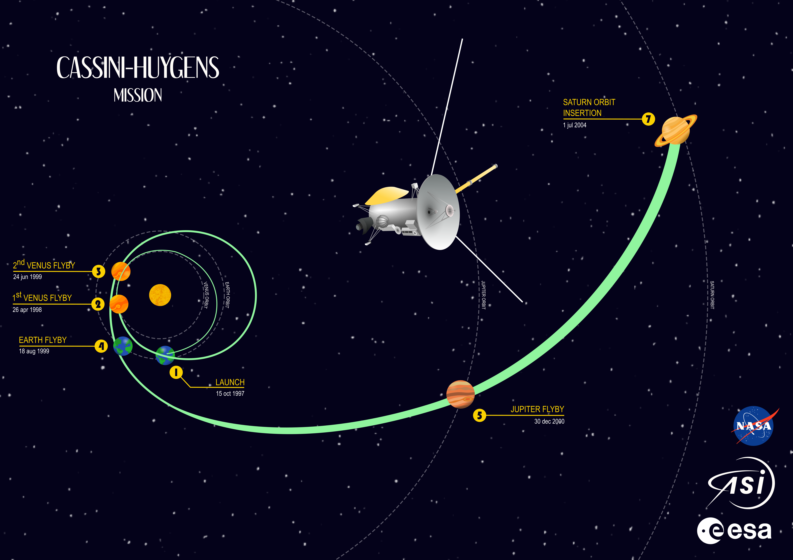
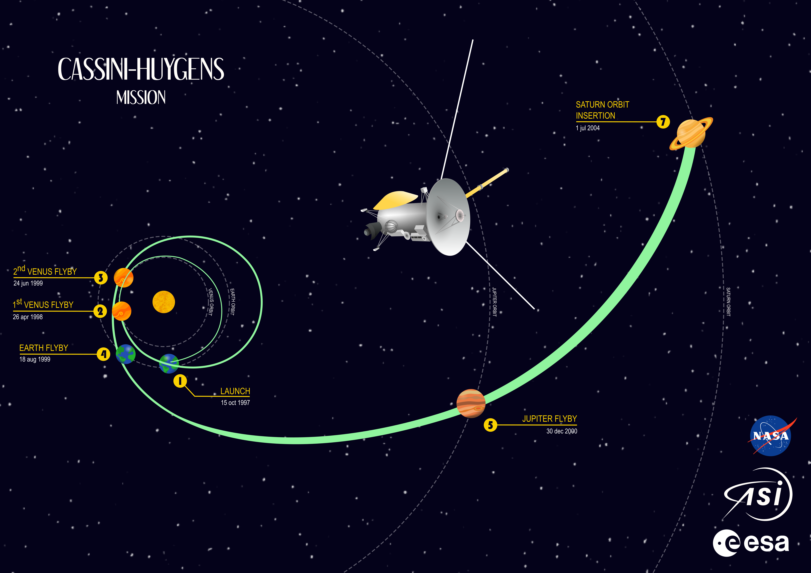

Dibujo matricial
 Recreación del yacimiento arqueológico de Portilla, Álava. Procreate
Recreación del yacimiento arqueológico de Portilla, Álava. Procreate
 Simbiosis plásticos y contaminantes. Dibujo matricial, programas utilizados: procreate & krita.
Simbiosis plásticos y contaminantes. Dibujo matricial, programas utilizados: procreate & krita.
Dibujo vectorial
 PIxD, cartel ganador del segundo premio del concurso BCAM NAUKAS del día de PI. Inkscape.

Misión espacial Cassini. Inkscape.
PIxD, cartel ganador del segundo premio del concurso BCAM NAUKAS del día de PI. Inkscape.

Misión espacial Cassini. Inkscape.
Animación
Ciclo de vida de la Sepia officinalisProgramas utilizados: Krita & Affter Effects.